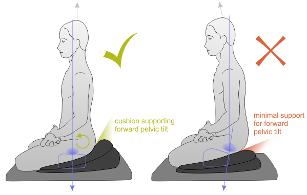

Process Over Product
Learn how the rocket works, to make better rockets in the future.
Chapter 2
What did I think about meditation before chapter 2
Mediation has come up multiple times so far in my life. However I can say I am not a regular practicer. I go through short intervals every few years typically after a large or stressful life event before falling of teh band wagon after a few weeks.It's an interesting thought that even though I know it is meant to help me but as it's not a physical thing I have found it hard to commit to despite being exposed to meditation and mindfulness from a young age. This year I hope to change this aspect.
New learnings from chapter 2
From chapter 2 I learnt that meditation trains meta-attention. This is given as an analogy of a bike and rider wishing to ride in a straight line. Meta-attention in this scenario is the repeated correction needed to maintain a straight line of travel, meaning the relatively straight line of movement in this analogy is attention. It was interesting reading about the articles that covered the impact of mindfulness meditation on physiologyical outcomes, i.e. psoriasis healing time / prevalence and attention-blink frequencies.
Thoughts on the suggested meditation techniques
In the past I have been taught breathing focused and visualisation techniques. I was initially recommended breathing awareness to start with as it would be easy for a beginner to grasp. Being stiff due to my time infront of screens has made it difficult to do much sitting meditation in the 7 point pose
for this reason I also prefer the walking meditation or active meditation. It also gives a greater endorphine return as exercise is being incorporated into the practice.... plus I can tend to have a few too many coffees so this helps walk it off...
Additional Musings